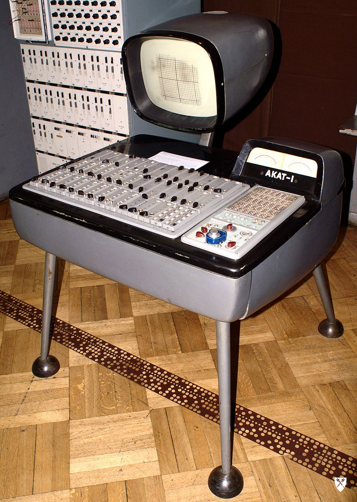
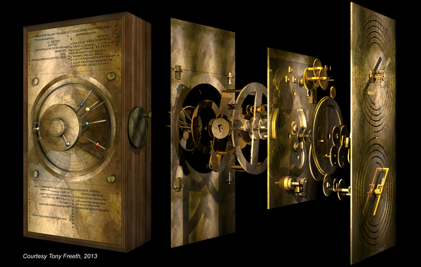
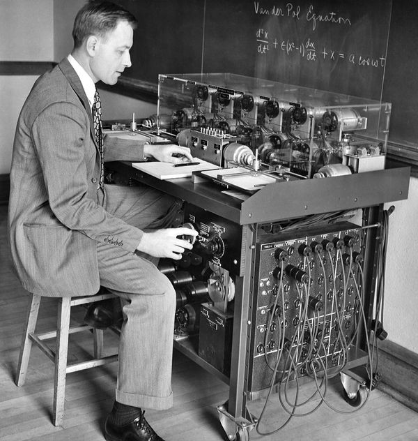

Se denomina
computadora analógica, a un tipo de ordenador que utiliza dispositivos electrónicos o
mecánicos para modelar el problema que se resuelve, utilizando un
tipo de representación de cantidad física para expresar los valores
que conforman el resultado.
Para el modelado se utiliza la analogía existente, en términos
matemáticos, de algunas situaciones que se dan en diferentes
campos. Por ejemplo, la que existe entre los movimientos
oscilatorios en mecánica y el análisis de corrientes alternas en
electricidad.
Estos dos planteamientos se analizan a través de
ecuaciones diferenciales, planteando algún tipo de modelo que permite obtener una solución
satisfactoria. Estos dispositivos se usan en contraposición a las
computadoras digitales, en las cuales los fenómenos físicos o mecánicos son utilizados
para construir una máquina de estado finito, que es usada después
para modelar elementos llamados instrucciones, que a través de un
programa (serie de instrucciones) permite calcular una solución al
problema que se desea resolver. Hay un grupo intermedio de
computadoras llamadas los
computadoras híbridas, en el que un ordenador digital es utilizado para controlar y
organizar entradas y salidas hacia y desde dispositivos analógicos
anexos; por ejemplo, los dispositivos analógicos podrían ser
utilizados para generar valores iniciales para iteraciones. Así, un
ábaco
sería una computadora digital, y una
regla de cálculo
un computador analógico. En una computadora analógica, el proceso de
cálculo se reemplaza por la medición y manipulación de alguna
cantidad física continua, como el desplazamiento mecánico o el
voltaje, por lo que estos dispositivos también se denominan
computadoras continuas. La computadora analógica es una
poderosa herramienta para el modelado e investigación de sistemas
dinámicos, es decir, aquellos en los que algún aspecto del sistema
cambia con el tiempo. Se pueden establecer ecuaciones relacionadas
con las tasas de cambio de las variables del problema, p. velocidad
versus tiempo. Estas ecuaciones se denominan ecuaciones
diferenciales y constituyen el modelo matemático de un sistema
dinámico.

El AKAT-1, un computador analógico polaco.
Mecanismo de anticitera
El mecanismo de Anticitera es una computadora analógica (o mecánica)
de la antigüedad. Supuestamente construido por científicos griegos,
el instrumento se data entre los años 150 a. C. y 100 a. C.,o, según
una observación reciente, hacia el año 200 a. C. El componente fue
recuperado en el mar Egeo, entre los años 1900 y 1901, de un antiguo
naufragio cercano a la isla griega de Anticitera.Este artefacto
aparentemente fue diseñado para predecir posiciones astronómicas y
los eclipses de hasta diecinueve años con propósitos astrológicos y
calendáricos, y predecir también la fecha exacta de seis certámenes
griegos antiguos, entre los que se encuentran los cuatro principales
juegos Panhelénicos y dos juegos más de menor entidad. Se debía
encontrar alojado en una caja de madera cuyas dimensiones eran de
340 por 180 por 90 milímetros; el dispositivo es un complejo
mecanismo de relojería compuesto de al menos 30 engranajes de
bronce. Los restos fueron encontrados como 82 fragmentos separados,
de los cuales solo siete contenían inscripciones importantes o
engranajes. El engranaje más grande (claramente visible en el
fragmento A a la derecha) mide aproximadamente 140 mm de diámetro y
originalmente contaba con 223 dientes. Es probable que el mecanismo
de Anticitera no fuera el único, como muestran las referencias de
Cicerón sobre estos mecanismos. Esto da soporte a la idea de que
hubo una tradición en la antigua Grecia de tecnología mecánica
compleja. Todos los fragmentos recuperados del mecanismo de
Anticitera se custodian en el Museo Arqueológico Nacional de Atenas.

Reconstruccion del mecanismo de anticitera
Analizador diferencial
El Analizador diferencial (en inglés, Differential analyser) fue un
computador analógico mecánico diseñado para solucionar ecuaciones
diferenciales por integración, usando mecanismos de ruedas y discos
para realizar la integración. Fue uno de los primeros dispositivos
de computación avanzados en ser usados operacionalmente. El
analizador fue inventado en 1876 por James Thomson, hermano de Lord
Kelvin. Una versión práctica fue primero construida por Harold Locke
Hazen y Vannevar Bush a principios de 1927 en el MIT. Ellos
publicaron un informe detallado sobre el dispositivo en 1931. D. R.
Hartree, de la Universidad de Mánchester, trajo el diseño a
Inglaterra, donde construyó su primer modelo (con su estudiante,
Arthur Porter) en 1934. Durante los cinco años siguientes, fueron
añadidos tres más: uno en la Universidad de Cambridge, en la Queen's
University de Belfast, y en la Royal Aircraft Establishment en
Farnborough. En los Estados Unidos, los analizadores diferenciales
fueron construidos en la base de la Fuerza Aérea Wright-Patterson y
en el sótano la Escuela Moore de Ingeniería Eléctrica en la
Universidad de Pensilvania a principios de los años 1940; el último
fue usado extensivamente en la línea de montaje de las tablas de
fuego de la artillería antes de la invención del ENIAC, que, de
muchas maneras, fue modelado después del analizador diferencial.
Algunos años más tarde, otro computador, el UTEC, fue construido en
la Universidad de Toronto, pero aparece que vio poco o ningún de
uso.

Arnold Nordsieck with the Nordsieck Differential Analyzer